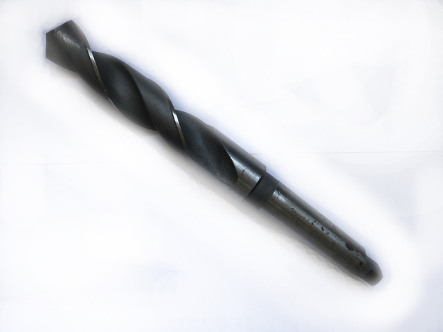

Свердла твердосплавні
Свердло ц/х т/с суцільне монолітне ф 0.6 ВК6-М 33х10 ф хвостовика 0.6 мм
55 UAH
без ПДВ
Наявність: 470 шт.
Код: FLK-06498
Опис
Свердло ц/х т/с суцільне монолітне ф 0.6 ВК6-М 33х10 ф хвостовика 0.6 мм — професійний металорізальний інструмент для свердління отворів у металі. Основні параметри: діаметр Ø 0.6 мм, розмір 33×10 мм та циліндричний хвостовик. Виготовлено з матеріалу твердий сплав ВК6, що забезпечує стійкість різальної кромки при обробці чавуну та кольорових металів. В наявності 470 шт. на складі у Харкові. Ціна 55 грн без ПДВ. Опт і роздріб, відправлення по всій Україні. Замовлення від 2 000 грн.
Характеристики
| Тип інструменту | Свердло |
|---|---|
| Категорія | Свердла твердосплавні |
| Діаметр Ø | 0.6 мм |
| Розміри | 33×10 мм |
| Матеріал | ВК6 |
| Хвостовик | циліндричний |
| Ø хвостовика | 0.6 мм |
| Стан | новий |
| Код товару | FLK-06498 |
| Наявність | 470 шт. |